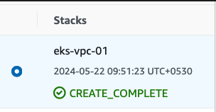
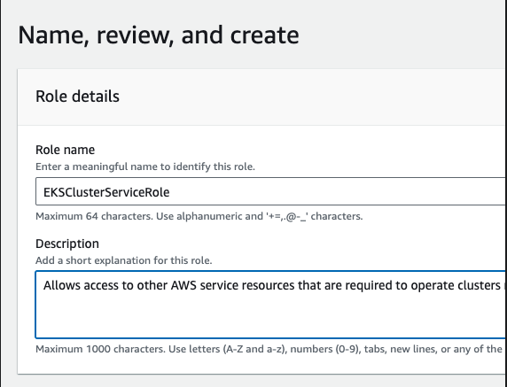
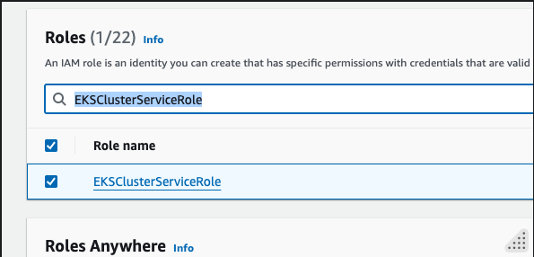
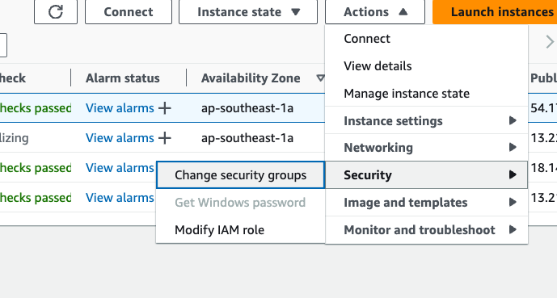

Setting up EKS Cluster with eksctl
Author: Gourav Shah Publisher: School of Devops Version : 18.03.2025.01
This lab is about getting ready to setup a EKS Cluster on AWS. Before you begin, make sure you have a operational AWS Account with access to create IAM Users and access to all relevant services including
- IAM
- VPC
- EKS
- S3
- EC2
Installing Pre-requisite Tools
Install eksctl
If you haven't installed eksctl yet, you can do so by following these instructions:
macOS/Linux:
curl --silent --location "https://github.com/weaveworks/eksctl/releases/latest/download/eksctl_$(uname -s)_amd64.tar.gz" | tar xz -C /tmp
sudo mv /tmp/eksctl /usr/local/bin
Install aws CLI
Check if aws cli is installed with
aws --version
If not, Refer to the official documentation to install aws CLI with os specific instructions from Install or update to the latest version of the AWS CLI - AWS Command Line Interface
Configure AWS CLI
Login to the AWS Console with the credentials given to you.
Once you login,visit IAM Console proceed to create Security Credentials and generate the AWS Access Key + AWS Secret Key pair.
Then make sure your AWS CLI is configured with the necessary permissions to create EKS clusters. You can configure it using:
aws configure
You'll need your AWS Access Key ID, Secret Access Key, region, and output format. The available output formats are:
- json: The default output format. Provides the output in JSON format.
- text: Provides the output in plain text format. This format is useful for simple parsing and readability.
- table: Provides the output in a readable table format. This format is useful for human readability but less suitable for parsing.
- yaml: Provides the output in YAML format. This is useful for configurations and other uses where YAML is preferred.
- yaml-stream: Provides the output in a streaming YAML format, where each document is separated by
---. This format is useful for continuous data processing.
Select region as ap-southeast-1 to be consistent with the labs created as part of this course.
[sample output]
➜ ~ aws configure
AWS Access Key ID [****************QSJX]: XXXX
AWS Secret Access Key [****************P01d]: YYYY
Default region name [ap-southeast-1]: xx-yyyy-n
Default output format [None]: table
where replace `xx-yyyy-n` with the region assigned to you in the status sheet (Google Sheet shared during class).
➜ ~ cat ~/.aws/config
[default]
region = xx-yyyy-n
output = table
Create SSH key Pair
To create a SSH key pair that you would use to log into the nodes created with EKS,
- Switch to EC2 Service from AWS Console, and make sure you have selected the same region you are going to launch EKS cluster inside e.g. Singapore
- Select Key Pairs from left side menu header Network & Security.
- Create a key pair of type RSA and download a .pem or .ppk file based on how and from where you are going to connect.

- Move the downloaded private key to a safe location and change its permissions. e.g.
mv ~/Downloads/eks-spore.pem ~/.ssh
ls -al ~/.ssh/eks-spore.pem
chmod 600 ~/.ssh/eks-spore.pem
ls -al ~/.ssh/eks-spore.pem
Now that the preparatory setup is done, you could proceed to create a EKS Cluster.
Setting up EKS Cluster with eksctl
While setting up EKS Cluster on AWS, there are two main options that you could consider
- Using
eksctlwhich is a dedicated EKS Cluster Management Tool - Using
awsCLI along withkubectlwhich is a more complex approach, but comes with more control in your hands
Both eksctl and the combination of aws cli with kubectl have their advantages and use cases when creating and managing AWS EKS clusters. Here's a comparison to help you decide which approach might be best for your course:
eksctl
Pros:
- Ease of Use:
eksctlis specifically designed to simplify the creation and management of EKS clusters. It abstracts many of the complexities involved. - Quick Setup: With a single command, you can create a fully functioning EKS cluster.
- Default Best Practices: It follows AWS best practices for cluster creation and configuration.
- Less Code: Requires fewer commands and less code to manage the cluster.
⠀ Cons:
- Less Granular Control: While it simplifies many tasks, it might abstract away some of the details, giving you less control over specific configurations.
- Dependency: Adds an additional dependency that students need to install and manage.
⠀
aws cli with kubectl
Pros:
- Granular Control: Provides more control over the EKS cluster configuration and setup, allowing for fine-tuning and customization.
- Learning Opportunity: Teaches students more about the underlying AWS services and Kubernetes configurations.
- Versatility:
aws cliandkubectlare versatile tools that can be used for a wide range of AWS and Kubernetes operations beyond just cluster creation.
Cons:
- Complexity: Requires more steps and a deeper understanding of AWS and Kubernetes concepts, which might be overwhelming for beginners.
- More Commands: Involves writing more commands and scripts, which can be error-prone.
As part of this lab, you will take a simpler approach and use eksctl to quickly create a cluster.
Create VPC with Public Subnets
EKS needs a VPC to launch itself in. There are three different options while creating the VPCs as follows
- VPC with Public and Private Subnets
- VPC with only Public Subnets
- VPC with only Private Subnets
While you would ideally create VPC with public and private subnets so that you could host your applications in private subnets and set up load balancers and ingress controllers in public, as part of this lab guide, you are going to set up VPC with public subnets only. This is to avoid creation of two NAT Gateways, which would incur additional costs.
The VPC that you are going to create has three public subnets that are deployed into different Availability Zones in an AWS Region. All nodes are automatically assigned public IPv4 addresses and can send and receive internet traffic through an internet gateway. A security group is deployed that denies all inbound traffic and allows all outbound traffic. The subnets are tagged so that Kubernetes can deploy load balancers to them.
If you choose to create a VPC with a different configuration, please pick a relevant template from Creating a VPC for your Amazon EKS cluster. ⠀
To create your VPC
-
Open the AWS CloudFormation console at https://console.aws.amazon.com/cloudformation.
-
From the navigation bar, select an AWS Region that supports EKS e.g. Singapore .
-
Choose Create stack, With new resources (standard).
-
From Prepare Temaplte, select Choose and existing template and Under Template source, select Amazon S3 URL.

- Paste the following URL into the text area under Amazon S3 URL and choose Next:
https://s3.us-west-2.amazonaws.com/amazon-eks/cloudformation/2020-10-29/amazon-eks-vpc-sample.yaml
- On the Specify Details page, enter the stack name e.g.
eks-vpc-01and update parameters if you want to change any, and then choose Next and create VPC stack.
Note : change eks-vpc-01 to a unique name for your VPC. Lets use your sequence number from the status sheet. e.g. eks-vpc-01, eks-vpc-02 ....
- Proceed to Review and create and submit the stack. It takes a few minutes to have the status change from to

once VPC is created, you could verify everything from VPC console. Also note down the VpcId and SubnetIds from the Outputs.

Configure IAM Role for EKS
Step 1: Create the IAM Role
-
Open the IAM Console: Go to the IAM console.
-
Create a Role:
- Click on
Rolesand thenCreate role. - Choose
EKSas the service that will use this role. - Select the
EKS - Clusteruse case.
- From Add Permissions page you will see the following policy already attached:
AmazonEKSClusterPolicy-
Select Next
-
From Name, review and create page , provide a Role name e.g.
EKSClusterServiceRoleand proceed to Create role.
 -
From IAM Console -> Roles search for
EKSClusterServiceRoleand select it. 
-
From Permissions tab, Add Permissions dropdown,
- Choose Attach policies.
-
Search for
AmazonEKSVPCResourceControllerand attach it to the role. -
Set the Trust Relationship: Ensure the trust relationship for the role allows EKS to assume the role. The trust policy should look like this:
{
"Version": "2012-10-17",
"Statement": [
{
"Effect": "Allow",
"Principal": {
"Service": "eks.amazonaws.com"
},
"Action": "sts:AssumeRole"
}
]
}
This should already be there. Verify it from the Trust relationships tab.
⠀
Note down the role ARN e.g. arn:aws:iam::665496447754:role/EKSClusterServiceRole which you would add to cluster configuration later. Also note the new policy being added to the role.

Launch EKS Cluster with eksctl
Start with eksctl
eksctl info
Create cluster configurarion as follows. You could refer to Config File Schema to explore more options.
File: cluster.yaml
apiVersion: eksctl.io/v1alpha5
kind: ClusterConfig
metadata:
name: eks-cluster-01 # Replace this with your unique cluster name
region: xx-yyy-n # Replace this with your region
vpc:
id: "vpc-aaaa" # Replace this with actual VPC id that you created
subnets:
public:
apsoutheast1a:
id: subnet-xxxx # replace with actual
apsoutheast1b:
id: subnet-yyyy # replace with actual
apsoutheast1c:
id: subnet-zzzz # replace with actual
managedNodeGroups:
- name: ng-1-workers
labels: { role: workers }
instanceType: t3.small
desiredCapacity: 2
maxPodsPerNode: 100
minSize: 1
maxSize: 4
ssh:
allow: true
publicKeyName: xxxx # replace with actual
tags:
k8s.io/cluster-autoscaler/enabled: "true"
k8s.io/cluster-autoscaler/eks-cluster-01: "owned"
iam:
withOIDC: true
serviceRoleARN: arn:aws:iam::xxxxxxxxx:role/EKSClusterServiceRole # replace with actual
⠀ Edit this file and replace the following with actual values * vpc id * subnets * public key name (listed ssh key on ec2 that you would like to ssh in with) * ServiceRoleARN
eksctl create cluster -f cluster.yaml
[sample output]
2024-05-22 14:53:47 [✔] all EKS cluster resources for "eks-cluster-01" have been created
2024-05-22 14:53:48 [ℹ] nodegroup "ng-1-workers" has 1 node(s)
2024-05-22 14:53:48 [ℹ] node "ip-192-168-240-31.ap-southeast-1.compute.internal" is ready
2024-05-22 14:53:48 [ℹ] waiting for at least 1 node(s) to become ready in "ng-1-workers"
2024-05-22 14:53:48 [ℹ] nodegroup "ng-1-workers" has 1 node(s)
2024-05-22 14:53:48 [ℹ] node "ip-192-168-240-31.ap-southeast-1.compute.internal" is ready
2024-05-22 14:53:48 [✔] created 1 nodegroup(s) in cluster "eks-cluster-01"
2024-05-22 14:53:48 [✔] created 0 managed nodegroup(s) in cluster "eks-cluster-01"
2024-05-22 14:53:49 [ℹ] kubectl command should work with "/Users/gshah/.kube/config", try 'kubectl get nodes'
2024-05-22 14:53:49 [✔] EKS cluster "eks-cluster-01" in "ap-southeast-1" region is ready
validate
eksctl get cluster
# Replace this with your unique cluster name e.g. eks-cluster-23
eksctl get nodegroup --cluster eks-cluster-01
kubectl get nodes
kubectl config get-contexts
check the max number of pods on each node
kubectl get nodes -o jsonpath='{.items[*].status.capacity.pods}'
kubectl get nodes -o jsonpath='{.items[*].status.allocatable.pods}'
Also observe the following resources created * EKS Cluster * Node Group ( EKS Cluster => Compute) * EC2 Instances * VPC, Subnets etc.
Setup Visualizer
cd ~
git clone https://github.com/schoolofdevops/kube-ops-view
kubectl apply -f kube-ops-view/deploy/
To check whether visualiser has come up, use the following commands,
kubectl get pods,services
[sample output ]
➜ ~ kubectl get pods,services
NAME READY STATUS RESTARTS AGE
pod/kube-ops-view-75fddd9cc4-dg9cr 1/1 Running 0 92s
NAME TYPE CLUSTER-IP EXTERNAL-IP PORT(S) AGE
service/kube-ops-view NodePort 10.100.38.21 <none> 80:32000/TCP 92s
To access the visualizer and other apps exposed with nodePort, create a new security group and attach it to the instances created with
- From EC2 => Network & Security => Security Groups => Create Security Group
- Provide security group name e.g.
NodePort - Select VPC created for EKS
- Add Inbound Rule (do not touch outbound)
- Custom TCP
- Port range : 30000-32767
- Source : Anywhere IPv4

- Proceed to create security group and note down the id once created e.g.
sg-033ad52b6dcc79277
- Add this security group to all nodes (ec2 instances) in the cluster from EC2 => Actions => Security => Change security groups 
- Search and Add security group, Save.

Now select the External IP of any of the nodes
e.g.
kubectl get nodes -o wide
and access the visualizer on port 32000 e.g. http://xxxx:32000/#scale=2.0
e.g.

Reference
- Creating Cluster with
eksctlCreating and managing clusters - Config File Schema: Config File Schema